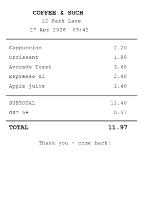
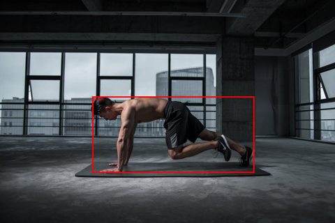
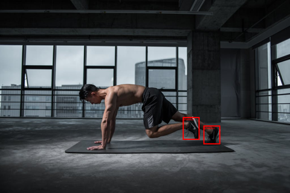
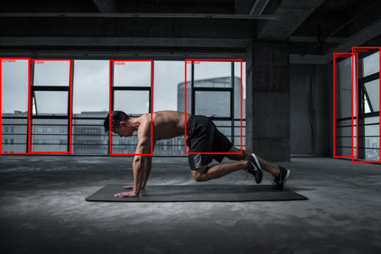
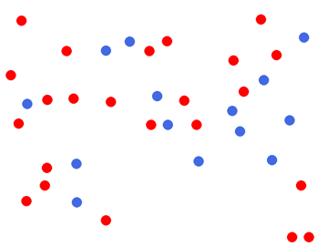
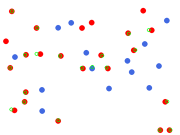
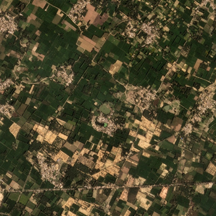

Moondream just shipped Photon 1.2.0, their inference runtime — the headline is native Apple Silicon support via Metal kernels (no CUDA, no Triton). Their flagship is Moondream 3 Preview (9 B params total, 2 B active via MoE-style routing) and it advertises caption / query / detect / point as primitives.
I run on a 64 GB M2 Max Mac Studio, so this should be a clean fit. Let’s see what actually works.
What I tried first (and why it didn’t work)
The marketing path is one line:
pip install moondream
import moondream as mdmodel = md.vl(local=True) # → loads the Photon engine on MPS
Engine init crashes with a native-code symbol mismatch. The compiled _kestrel_mps.so ships looking for two C++ symbols that, between them, don’t co-exist in any public PyTorch wheel:
torch
at::mps::MPSStream::device() (added ~2.7)
c10::TensorImpl::decref_pyobject() (removed ~2.6)
result
2.5.1
❌
✓
dlopen fails
2.6.0
❌
✓
dlopen fails
2.7.0
✓
❌
dlopen fails
2.7.1
✓
❌
dlopen fails
2.8.0
✓
❌
dlopen fails
2.9.1
✓
❌
dlopen fails
The kestrel-kernels wheel was built against a torch ABI that isn’t shipped on PyPI — likely an internal nightly. Until they cut a refreshed wheel, local=True is unusable from a regular pip install on Apple Silicon.
What works today
The previous-generation vikhyatk/moondream2 (1.93 B params) loads cleanly from Hugging Face via transformers, runs on MPS, and exposes the same caption / query / detect / point API. That’s what we’ll use for the demos. The model is small enough to load in ~12 s and run several inferences per second on the M2 Max.
Code
import timefrom pathlib import Pathimport torchfrom transformers import AutoModelForCausalLM, AutoTokenizerfrom PIL import ImageMODEL_ID ='vikhyatk/moondream2'REVISION ='2025-04-14'# pin the model revision so this notebook reproducesDEVICE ='mps'if torch.backends.mps.is_available() else'cpu't0 = time.time()model = AutoModelForCausalLM.from_pretrained( MODEL_ID, trust_remote_code=True, revision=REVISION).to(DEVICE)tok = AutoTokenizer.from_pretrained(MODEL_ID, revision=REVISION)n_params =sum(p.numel() for p in model.parameters())print(f'loaded {MODEL_ID}@{REVISION} in {time.time()-t0:.1f}s 'f'· {n_params/1e9:.2f} B params · device={DEVICE}')
/private/tmp/moondream_venv/lib/python3.12/site-packages/tqdm/auto.py:21: TqdmWarning: IProgress not found. Please update jupyter and ipywidgets. See https://ipywidgets.readthedocs.io/en/stable/user_install.html
from .autonotebook import tqdm as notebook_tqdm
loaded vikhyatk/moondream2@2025-04-14 in 4.3s · 1.93 B params · device=mps
Helpers
Tiny wrappers so the cells below stay focused on what each capability actually does.
Code
from PIL import ImageDraw, ImageFontimport iofrom IPython.display import displayIMG_DIR = Path('images')def load(name):return Image.open(IMG_DIR / name).convert('RGB')def time_call(fn, *a, **k): t = time.time() out = fn(*a, **k)return out, time.time() - tdef show(img, max_w=560):if img.width > max_w: h =int(img.height * max_w / img.width) img = img.resize((max_w, h)) display(img)def draw_boxes(img, det, label='', color='red'): out = img.copy(); d = ImageDraw.Draw(out); W, H = out.sizefor o in det.get('objects', []): box = (o['x_min']*W, o['y_min']*H, o['x_max']*W, o['y_max']*H) d.rectangle(box, outline=color, width=4)if label: d.text((box[0]+4, box[1]+2), label, fill=color)return outdef draw_points(img, pts, label='', color='lime', r=8): out = img.copy(); d = ImageDraw.Draw(out); W, H = out.sizefor p in pts.get('points', []): x, y = p['x']*W, p['y']*H d.ellipse((x-r, y-r, x+r, y+r), outline=color, width=3)if label: d.text((x+r+2, y-r), label, fill=color)return out
Caption — “what is this image?”
Free-form image description. Three different photos.
Code
for name in ['desk_worker.jpg', 'person4.jpg', 'kiln_tile.jpg']: img = load(name) show(img, 360) cap, dt = time_call(model.caption, img)print(f'[{name}] {dt:.2f}s')print(' ', cap['caption'].strip())print()
[desk_worker.jpg] 5.65s
The image shows a man seated at a wooden desk in a modern office. He is dressed in a light blue suit and is smiling as he works on a laptop. The desk is positioned in front of a large window, offering a view of a cityscape. The office features a teal or turquoise wall, a black office chair, and a yellow vase with a green plant. A telephone is also visible on the desk. The man is wearing a light blue or grey wristwatch.
[person4.jpg] 4.34s
A man is performing a push-up exercise on a black exercise mat in a spacious, industrial-style gym. He is shirtless and wearing black shorts and athletic shoes. The gym features a concrete floor and large windows that offer a view of a city skyline. The man's body is in a plank position, with his hands firmly grasping the mat, demonstrating the strength and balance required for this exercise.
[kiln_tile.jpg] 6.56s
The image presents an aerial view of a rural landscape, likely captured from a satellite or drone. The terrain is a patchwork of green fields, interspersed with patches of brown and tan, suggesting a mix of agricultural land and possibly some areas of dry or less fertile land. The fields are arranged in a roughly rectangular pattern, with some areas showing signs of human activity, such as roads or paths. The image also reveals a network of roads and paths crisscrossing the landscape, connecting the various agricultural areas. The colors in the image are predominantly green, brown, and tan, with some areas of darker green, possibly indicating dense vegetation or different types of crops. The image does not contain any discernible text or human-made objects, and the relative positions of the fields and roads remain consistent throughout the image.
Query — “answer a specific question about this image”
Same image, different questions. This is the closest thing to chat-with-an-image and is where Moondream tends to feel snappiest.
Code
img = load('desk_worker.jpg')show(img, 360)questions = ["What colour is the man's jacket?","Is he wearing a wristwatch? If yes, on which arm?","How many plants are visible?","What appears outside the window?",]for q in questions: ans, dt = time_call(model.query, img, q)print(f'Q: {q}\nA: {ans["answer"].strip()} ({dt:.2f}s)\n')
Q: What colour is the man's jacket?
A: The man's jacket is light blue. (2.11s)
Q: Is he wearing a wristwatch? If yes, on which arm?
A: Yes, the man is wearing a wristwatch on his left wrist. (2.35s)
Q: How many plants are visible?
A: There are two plants visible in the image. (2.11s)
Q: What appears outside the window?
A: Outside the window, there are tall buildings visible, suggesting that the man is in an urban setting. (2.39s)
Code
# A more demanding image: the synthetic receipt from the ReAct post.img = load('receipt.png')show(img, 280)for q in ["What is the printed total?","List all items and their prices.","What is the GST percentage?",]: ans, dt = time_call(model.query, img, q)print(f'Q: {q}\nA: {ans["answer"].strip()} ({dt:.2f}s)\n')

Q: What is the printed total?
A: 11.97 (1.74s)
Q: List all items and their prices.
A: Cappuccino: 2.20
Croissant: 1.80
Avocado Toast: 3.60
Espresso x2: 2.40
Apple juice: 1.40
SUBTOTAL: 11.40
GST: 0.57
TOTAL: 11.97 (3.65s)
Q: What is the GST percentage?
A: 5% (1.41s)
Detect — open-vocabulary object boxes
No fixed class list: you describe what you want, you get back boxes in normalised (x_min, y_min, x_max, y_max) coords.
Code
img = load('person4.jpg')for prompt in ['person', 'sneaker', 'window']: det, dt = time_call(model.detect, img, prompt) n =len(det.get('objects', []))print(f'detect[{prompt}] {n} hit(s) {dt:.2f}s') show(draw_boxes(img, det, label=prompt, color='red'), 480)
detect[person] 1 hit(s) 1.96s

detect[sneaker] 2 hit(s) 2.42s

detect[window] 6 hit(s) 2.24s

Point — “where is X?”
Returns a list of (x, y) centres in normalised coordinates. Cheaper than detect (no box regression) and useful for click-targets, for cropping further inspection, or as a feature for downstream layout reasoning.
Same dots.png we used in the ReAct post: 23 red + 14 blue = 37 total. Both Gemma 4 31B and Sapiens-2 stumble on this. How does Moondream do?
Code
img = load('dots.png')show(img, 360)for q in ["How many dots are in this image?","How many red dots?","How many blue dots?",]: ans, dt = time_call(model.query, img, q)print(f'Q: {q}\nA: {ans["answer"].strip()} ({dt:.2f}s)')print()# Also try the explicit point() endpoint, which can give a better count.for prompt in ['red dot', 'blue dot']: pts, dt = time_call(model.point, img, prompt)print(f'point[{prompt}] -> {len(pts["points"])} hits ({dt:.2f}s)')show(draw_points(img, model.point(img, 'red dot'), color='lime'), 360)

Q: How many dots are in this image?
A: 25 (1.42s)
Q: How many red dots?
A: 15 (1.80s)
Q: How many blue dots?
A: 10 (1.39s)
point[red dot] -> 20 hits (2.59s)
point[blue dot] -> 14 hits (2.14s)

Stress test — out-of-distribution (Sentinel-2 satellite tile)
A 640×640 tile from the SentinelKilnDB Lucknow set — agricultural land with a few brick kilns clustered in the lower-right. Moondream wasn’t trained on overhead imagery, so this is a deliberate OOD probe.
Code
img = load('kiln_tile.jpg')show(img, 360)for q in ["Describe this image.","What kind of land is shown?","Are there any brick kilns visible?","How many distinct settlements or villages can you see?",]: ans, dt = time_call(model.query, img, q)print(f'Q: {q}\nA: {ans["answer"].strip()} ({dt:.2f}s)\n')

Q: Describe this image.
A: The image presents an aerial view of a rural landscape, showcasing a vast expanse of green fields and patches of brown and tan. The fields are scattered across the landscape, with some areas showing a mix of green and brown hues. The terrain appears relatively flat, with no visible hills or mountains in the distance.
Numerous small buildings and structures are scattered throughout the landscape, adding a human touch to the otherwise natural scene. These buildings are dispersed across the fields, with some located near the edges of the image and others in the middle. The image captures the beauty of rural life, with the open fields and scattered buildings creating a picturesque scene. (5.35s)
Q: What kind of land is shown?
A: The image shows a large area of farmland, which is a mix of green fields and patches of brown. (2.05s)
Q: Are there any brick kilns visible?
A: Yes, there are brick kilns visible in the image, located in the middle of the field. (2.16s)
Q: How many distinct settlements or villages can you see?
A: There are several distinct settlements or villages visible in the image, scattered across the green fields and farmland. (2.17s)
Takeaways
Photon 1.2.0 binary is broken on Apple Silicon as of this writing — the kestrel-kernels wheel was compiled against a torch ABI that isn’t shipped to PyPI. Tracking issue worth filing upstream; for now, local=True doesn’t load.
Moondream 2 (1.93 B) via transformers works fine on MPS — 12 s cold start, ~2-5 s per query depending on the question. Captions are fluent; query/detect/point all return structured outputs.
Strengths: free-form Q&A on RGB photos, open-vocabulary detection, fast point endpoint. The grounded primitives (detect, point) are the differentiator vs general-purpose VLMs — they’re cheaper than asking an LLM to type out coordinates.
Weaknesses: counting (the dots stress test undercounts in the same way every VLM does), and overhead/satellite imagery — which is fair, the training data is consumer photos.
What I’d reach for tomorrow: point to seed crops for a heavier downstream model. Cheap localisation is undervalued.
If/when the Photon 1.2.0 binary lands a fixed wheel, the upgrade should be drop-in (Moondream 3’s caption / query / detect / point API is unchanged from 2). Until then, this notebook is the working version.